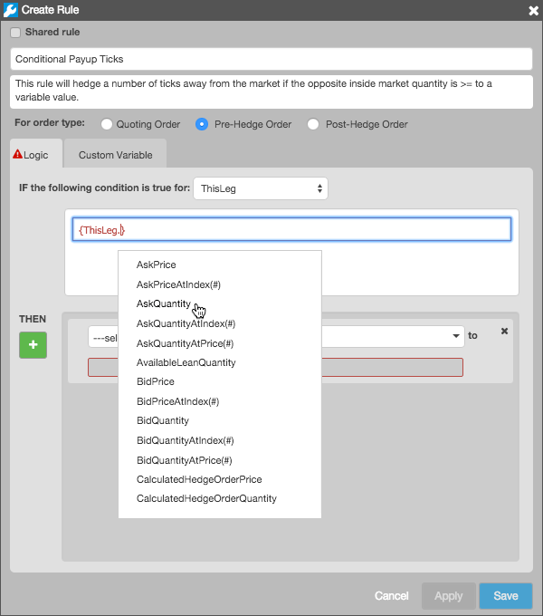

The Logic tab contains fields to set conditions and conditional logic for the rule.
Before defining the conditions for applying the rule to each leg, select one of the following condition types in If the following condition is true for:
After selecting a condition type, define a condition using as many expressions as needed. Double-click in the condition text field to enter an expression, or right-click the text field to add a complex expression using AND/OR conditions. After adding AND/OR, right-click the AND or OR to add another AND/OR condition. Expressions can be moved within a condition by clicking the expression to select it and using drag-and-drop to move it.
The rule you create will be applied to a single leg of the spread. However, you can reference multiple legs in defining the condition.
Note: A rule is "evaluated" per leg, however, multiple legs may be "iterated" as part of evaluating the rule.
There are three leg identifier keywords you can enter in the text field that refer to the leg(s) involved in the expression(s):
Note: Do not use the Leg identifier with the When the condition is true for this leg condition type, because this condition type has no implied iteration.
Note: There is currently no validation to prevent you from referencing a non-existent leg (e.g., Leg3 in a two-legged spread).
Enter a leg identifier followed by a "." to select a leg attribute, such as:
When entering a leg identifier, the text field makes "intellisense" suggestions for which leg attribute to use. Refer to Leg Attributes for a description of the leg attributes available in the Condition and Action text fields.

To simplify rule construction, you only need to build a rule for the buy (bid) side of the trade. You can then choose to have it automatically reverse when it's being evaluated from the sell (ask) side.
To automatically switch [Bid]- and [Ask]- attributes, Autospreader® Rules reverses arithmetic expressions ( "+" and "-" operations) and logical operators (<, >, ≤, ≥) as long as they are accompanied by operands and the condition is wrapped in curly braces "{ }". For example, the following condition: {ThisLeg.CalculatedQuoteOrderPrice < ThisLeg.BidPrice - ThisLeg.MinimumPriceIncrement}...is converted to the following when evaluated from the sell side: {ThisLeg.CalculatedQuoteOrderPrice > ThisLeg.AskPrice + ThisLeg.MinimumPriceIncrement}
The following arithmetic expressions and operators can be used when entering your condition logic: